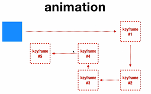

Animation

Sintaks style nya (shorthand) :
Animation : [name] [duration] [timing-function] [delay] [iteration-count] [direction] [fill-mode] [play-state]
- name : bebas
- duration : berapa s
- function : ease | ease-in | ease-out | esase-in-out | cubic-bezier
- delay : delay berapa s
- iteration-count : berapa kali interksi (angka | infinite)
- direction : normal | reverse | alternate (paling smooth) | alternate-reverse
- fill-mode : none | forwards | backwards | both
- play-state : runnig | paused
Implementasi :
Kotak 1
sintaks > animation: kotak1 3s ease 1.5 alternate both ;